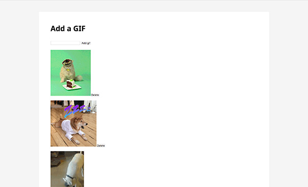

Blog Posts
Presentation: Jekyll
March 14, 2017
Jekyll is a static site generator, which means it doesn’t require any database connection. Static sites have a direct connection to the server and retrieves plain HTML files whereas dynamic sites can have multiple requests to the server and database which in-turn slows down the load time. For static sites, you don’t have to deal with the database but it also means you don’t have a CMS to work with. Dynamic sites allows for real-time data and user input and is generally meant for larger websites.
Jekyll is a powerful site generator, but I’m going to focus on the templating system and data files. Templating allows you to create a single file that contains site-wide content such as CSS and JS files, navigation, and footer. Jekyll uses Liquid as its template engine. Liquid’s two markups are output and tag. Output lets you display content and markup lets you perform tasks such as for loops or if-then statements. Jekyll uses data files as a way to store data, it’s the equivalent to a database such as MongoDB or SQL. Jekyll suppors YAML, JSON, and CSV file types as data files.
Check out Jekyll here.

Studio 5: AngularJS + Firebase Chatroom
February 21, 2017
I chose to work with AngularJS and Firebase to create a chatroom. AngularJS is a javascript framework that for dynamic web apps by extending HTML's syntax. AngularJS connects javascript with the DOM and allows for asynchronous DOM manipulation. Firebase is a set of tools to develop apps. For this studio, I wanted to use Firebase's realtime database to store the messages that the user entered in the chatroom.
I spent some time setting up and connecting AngularJS with Firebase and then the majority of the time trying to figure out the authentication to allow users to sign up and log in. In the end, I created a form that users can use to search for a gif and the gif will be added to the Firebase database. At the same time AngularJS adds the image to the list of gifs in the HTML. Users can go on the site and add their own gif to the site. Users can also delete and these changes will take affect immediately. I think this is a feasible option to create quick working prototype that connects to a database.
Checkout AngularJS and Firebase.
Studio 4: Counting down to Andy's haircut
February 14, 2017
For studio 4, I created a countdown to my haircut. I wanted this to be a fun experience where the user can navigate to different phases of my hair. It was really fun making the experience interactive. Users can click the different points of the timeline where the character will animate and walk to the point. Originally I wanted to animate the hair length, but I couldn't figure that out in time so I ended up with an alternative option. I decided to animate a sign that showed what week it is and cover the character and just switch out the hair image. Another interactive feature I added was the ability to use the left arrow, right arrow, spacebar, and "w" keys to control the character. It's kind of like a mini game.
Studio 3: Funko Pop! Vinyl Collection
February 7, 2017
I chose to create an archive of part of my Funko Pop! Vinyl collection. I've always kept my figures in their boxes, so I wanted to create a fun way to showscase and interact with them. When the page loads, I only show the top of their heads to create curiosity and encourage users to interact with the images. When an image is clicked, the figure inside the box comes into view. When a user hovers over the box, the lid opens to indicate that they can click on the box to take the figure out. Then at the last step of the interaction they can rotate the figure in 360 degrees. Ideally, I would crop out all the images of the figure so that it has a transparent background. I would also animate the figure so that it doesn't have to leave the screen and reappear, there would be a more seamless transition from inside the box and onto the center of the screen.
Learning IxD From Everyday Objects
January 31, 2017
Almost everyday I write an email through Google's Gmail or Inbox client. It's techincally a form, but it doesn't looks like a traditional form with input fields and labels. The form also sits nicely ontop of the page content, it doesn't need its own page. Even though it doesn't follow the traditional aesthetics of a form, the input fields are familiar because it resembles writing a letter. The form asks for the recipient's address (email address in the "To" field), subject of the letter ("Subject" field), and content of the letter ("Say something" field). The main buttons and actions are grouped at the bottom so it's easy to find. The blue "send" button reacts like a real button press; when you click on it the button looks like it's being pressed down.
Bill Derouchey's Article
Sketch App by Bohemian
January 11, 2017
Sketch is a design tool built by Bohemian. It's best used for creating user interface designs for web and mobile apps. Sketch has a beautiful and simple interface that lets users focus on creating professional designs without unnecessary tools taking up screen space.
Photoshop is a jack of all trades where users can edit photos, create graphics, and design interfaces. Illustrator focuses on vector graphics, icons, and also lets users create interfaces. Sketch is like the perfect child between Photoshop and Illustrator but was raised by an awesome uncle that taught Sketch how to get rid of its bad habits from Photoshop and Illustrator.
Sketch’s interface is familiar where it has the toolbars and attributes along the sides of the interface. It’s a smart move by not trying to reinvent the wheel but clean up and enhance the interface instead. The icons and buttons are all clear and easy to understand and the interactions are intuitive.
back to home